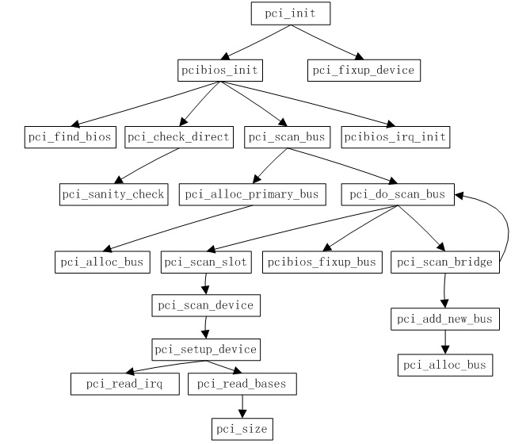

前面我们讲了PCI的数据结构，而初始化操作想必读者也能猜到，但是PCI的操作设计大量的硬件知识，所以这里对于数据结构的操作就不详细说明，读者应该能看明白，但是对于硬件操作等我们还是详细说明。
上一篇说过，对于i386的PCI的读写等操作都是通过0XCF8和0XCFC这两个寄存器的读写来进行的，对于读写的格式我们也说明了。那么对于不同的读写操作分为读字节、读字、读双字、写字节、写字和写双字，对于这些底层操作是通过pci_ops数据结构来实现的，底层的实现是通过in和out等指令来实现的（详见《Diers操作系统设计与实现》）。那么中间的部分是这样的（在drivers/pci/pci.c中）：
1 2 3 4 5 6 7 8 9 10 11 12 13 14 15 16 17 18 19 20 21 22 |
#define PCI_byte_BAD 0 #define PCI_word_BAD (pos & 1) #define PCI_dword_BAD (pos & 3) #define PCI_OP(rw,size,type) \ int pci_##rw##_config_##size (struct pci_dev *dev, int pos, type value) \ { \ int res; \ unsigned long flags; \ if (PCI_##size##_BAD) return PCIBIOS_BAD_REGISTER_NUMBER; \ spin_lock_irqsave(&pci_lock, flags); \ res = dev->bus->ops->rw##_##size(dev, pos, value); \ spin_unlock_irqrestore(&pci_lock, flags); \ return res; \ } PCI_OP(read, byte, u8 *) PCI_OP(read, word, u16 *) PCI_OP(read, dword, u32 *) PCI_OP(write, byte, u8) PCI_OP(write, word, u16) PCI_OP(write, dword, u32) |
这是通过宏定义连接等来实现的，比如PCI_OP(read,word,u16 *)会通过宏定义处理成函数int pci_read_config_word()，注意这样的函数名字都是有规范的，read/write表示读或者写，byte/word/dword表示读写的是字节/字/双字，对于pci_ops中实际上是这样的（举例：pci_direct_conf1）：
1 2 3 4 5 6 7 8 |
static struct pci_ops pci_direct_conf1 = { pci_conf1_read_config_byte, pci_conf1_read_config_word, pci_conf1_read_config_dword, pci_conf1_write_config_byte, pci_conf1_write_config_word, pci_conf1_write_config_dword, }; |
而前面的pci_read_config_word()实际上是通过函数指针调用的pci_conf1_read_config_word()，真正的实现是在arch/i386/kernel/pci-pc.c中：
1 2 3 4 5 6 |
static int pci_conf1_read_config_word(struct pci_dev *dev, int where, u16 *value) { outl(CONFIG_CMD(dev,where), 0xCF8); *value = inw(0xCFC + (where&2)); return PCIBIOS_SUCCESSFUL; } |
可见实际上就是操作0XCF8和0XCFC，先写后读。
除了1型以外还有2型和BIOS型的读写方式，也就是PCI配置寄存器操作，这里不再详细说明。
为了便于理解和查看，本节重要的函数调用关系图如下：

PCI的初始化操作入口在drivers/pci/pci.c中：
1 2 3 4 5 6 7 8 9 10 11 12 13 14 |
void __init pci_init(void) { struct pci_dev *dev; pcibios_init(); pci_for_each_dev(dev) { pci_fixup_device(PCI_FIXUP_FINAL, dev); } #ifdef CONFIG_PM pm_register(PM_PCI_DEV, 0, pci_pm_callback); #endif } |
在这里我们不关心电源管理的选项，实际上就剩下两件事：PCI设备的探测和PCI设备的修正。
PCI的初始化探测是在函数pcibios_init()中，这个函数定义在arch/i386/kernel/pci-pc中：
1 2 3 4 5 6 7 8 9 10 11 12 13 14 15 16 17 18 19 20 21 22 23 24 25 26 27 28 29 30 31 32 33 34 35 36 37 |
void __init pcibios_init(void) { struct pci_ops *bios = NULL; struct pci_ops *dir = NULL; #ifdef CONFIG_PCI_BIOS if ((pci_probe & PCI_PROBE_BIOS) && ((bios = pci_find_bios()))) { pci_probe |= PCI_BIOS_SORT; pci_bios_present = 1; } #endif #ifdef CONFIG_PCI_DIRECT if (pci_probe & (PCI_PROBE_CONF1 | PCI_PROBE_CONF2)) dir = pci_check_direct(); #endif if (dir) pci_root_ops = dir; else if (bios) pci_root_ops = bios; else { printk("PCI: No PCI bus detected\n"); return; } printk("PCI: Probing PCI hardware\n"); pci_root_bus = pci_scan_bus(0, pci_root_ops, NULL); //扫描枚举总线和设备 pcibios_irq_init(); //PCI的中断初始化 pcibios_fixup_peer_bridges(); pcibios_fixup_irqs(); pcibios_resource_survey(); #ifdef CONFIG_PCI_BIOS if ((pci_probe & PCI_BIOS_SORT) && !(pci_probe & PCI_NO_SORT)) pcibios_sort(); #endif } |
这里的条件编译选项CONFIG_PCI_BIOS表示的是使用BIOS自带的方法进行PCI探测，而CONFIG_PCI_DIRECT表示的是使用Linux的方法来进行手工探测。第一次的探测仅探测PCI树的树根，然后再进一步探测。
我们这里不关心BIOS自带的方法探测，已经过时，这里仅关心Linux的直接探测。函数pci_check_direct()定义在pci-pc.c中：
1 2 3 4 5 6 7 8 9 10 11 12 13 14 15 16 17 18 19 20 21 22 23 24 25 26 27 28 29 30 31 32 33 34 35 36 37 38 39 40 41 42 43 44 45 46 47 48 49 50 51 52 53 54 55 |
static struct pci_ops * __init pci_check_direct(void) { unsigned int tmp; unsigned long flags; __save_flags(flags); __cli(); /* * Check if configuration type 1 works. */ /* *检查PCI总线是否存在，先按照1型操作探测，再按2型操作探测 *探测口就是先前说的0XCF8~0XCFF */ if (pci_probe & PCI_PROBE_CONF1) { /* *探测方式是先写入0x01（读出状态命令？）然后将值保存于 *tmp中，然后写入0x80000000进行探测，若探测成功则读出的值为 *0x80000000，然后使用pci_sanity_check()进行验证，最后将寄存器复原 *也就是再把tmp写入进去 */ outb (0x01, 0xCFB); tmp = inl (0xCF8); outl (0x80000000, 0xCF8); if (inl (0xCF8) == 0x80000000 && pci_sanity_check(&pci_direct_conf1)) { outl (tmp, 0xCF8); __restore_flags(flags); printk("PCI: Using configuration type 1\n"); //在内核的I/O设备资源树中增加一个节点 request_region(0xCF8, 8, "PCI conf1"); return &pci_direct_conf1; } outl (tmp, 0xCF8); } /* * Check if configuration type 2 works. */ if (pci_probe & PCI_PROBE_CONF2) { outb (0x00, 0xCFB); outb (0x00, 0xCF8); outb (0x00, 0xCFA); if (inb (0xCF8) == 0x00 && inb (0xCFA) == 0x00 && pci_sanity_check(&pci_direct_conf2)) { __restore_flags(flags); printk("PCI: Using configuration type 2\n"); request_region(0xCF8, 4, "PCI conf2"); return &pci_direct_conf2; } } __restore_flags(flags); return NULL; } |
验证函数pci_sanity_check()定义在arch/i386/kernel/pci-pc.c中：
1 2 3 4 5 6 7 8 9 10 11 12 13 14 15 16 17 18 19 20 21 22 23 24 25 26 27 28 29 30 31 32 33 34 35 |
/* * Before we decide to use direct hardware access mechanisms, we try to do some * trivial checks to ensure it at least _seems_ to be working -- we just test * whether bus 00 contains a host bridge (this is similar to checking * techniques used in XFree86, but ours should be more reliable since we * attempt to make use of direct access hints provided by the PCI BIOS). * * This should be close to trivial, but it isn't, because there are buggy * chipsets (yes, you guessed it, by Intel and Compaq) that have no class ID. */ static int __init pci_sanity_check(struct pci_ops *o) { u16 x; struct pci_bus bus; /* Fake bus and device */ struct pci_dev dev; if (pci_probe & PCI_NO_CHECKS) return 1; bus.number = 0; dev.bus = &bus; /* *一条PCI设备最多可以有256个逻辑设备，而HOST-PCI桥至少应该 *提供PCI_CLASS_BRIDGE_HOST和PCI_CLASS_DISPLAY_VGA这 *二者之一，如果连这也没有的话就至少应该是Intel或者Compaq制造 *的，如果这样还不符合的话就认为没有此设备，前面的探测是巧合 */ for(dev.devfn=0; dev.devfn < 0x100; dev.devfn++) if ((!o->read_word(&dev, PCI_CLASS_DEVICE, &x) && (x == PCI_CLASS_BRIDGE_HOST || x == PCI_CLASS_DISPLAY_VGA)) || (!o->read_word(&dev, PCI_VENDOR_ID, &x) && (x == PCI_VENDOR_ID_INTEL || x == PCI_VENDOR_ID_COMPAQ))) return 1; DBG("PCI: Sanity check failed\n"); return 0; } |
这些函数执行完了就确定好了操作等，这些确定好了就使用pci_scan_bus()来进行扫描，并建立PCI树，这个函数定义在drivers/pci/pci.c中：
1 2 3 4 5 6 7 8 9 10 |
struct pci_bus * __init pci_scan_bus(int bus, struct pci_ops *ops, void *sysdata) { struct pci_bus *b = pci_alloc_primary_bus(bus); //分配主总线空间 if (b) { b->sysdata = sysdata; b->ops = ops; //设置操作 b->subordinate = pci_do_scan_bus(b); //扫描从设备 } return b; } |
实际的扫描就是探测并设置数据结构，在内核中建立PCI树，在pci_scan_bus()中建立好了主总线数据结构以后就使用pci_do_scan_bus()来探测并建树。
函数pci_alloc_primary_bus()定义在drivers/pci/pci.c中：
1 2 3 4 5 6 7 8 9 10 11 12 13 14 15 16 17 18 |
struct pci_bus * __init pci_alloc_primary_bus(int bus) { struct pci_bus *b; if (pci_bus_exists(&pci_root_buses, bus)) { //检查是否重复 /* If we already got to this bus through a different bridge, ignore it */ DBG("PCI: Bus %02x already known\n", bus); return NULL; } b = pci_alloc_bus(); //分配数据空间 list_add_tail(&b->node, &pci_root_buses); //加入队列 b->number = b->secondary = bus; b->resource[0] = &ioport_resource; //设置I/O空间地址占用 b->resource[1] = &iomem_resource; //设置内存空间地址占用 return b; } |
函数pci_do_scan_bus()定义在drivers/pci/pci.c中：
1 2 3 4 5 6 7 8 9 10 11 12 13 14 15 16 17 18 19 20 21 22 23 24 25 26 27 28 29 30 31 32 33 34 35 36 37 38 39 40 41 42 43 44 45 46 47 48 49 50 51 52 53 54 |
static unsigned int __init pci_do_scan_bus(struct pci_bus *bus) { unsigned int devfn, max, pass; struct list_head *ln; struct pci_dev *dev, dev0; DBG("Scanning bus %02x\n", bus->number); max = bus->secondary; /* Create a device template */ memset(&dev0, 0, sizeof(dev0)); dev0.bus = bus; dev0.sysdata = bus->sysdata; /* Go find them, Rover! */ /* *依次扫描总线上的最多32个物理设备，每个物理设备有最多8个 *逻辑设备，pci_scan_slot()用于一次扫描8个逻辑设备 */ for (devfn = 0; devfn < 0x100; devfn += 8) { dev0.devfn = devfn; pci_scan_slot(&dev0); } /* * After performing arch-dependent fixup of the bus, look behind * all PCI-to-PCI bridges on this bus. */ DBG("Fixups for bus %02x\n", bus->number); pcibios_fixup_bus(bus); //修正 /* *分两趟扫描，第一趟是针对已经由BIOS进行处理过的桥，第二趟是针对 *未经BIOS处理过的桥 */ for (pass=0; pass < 2; pass++) for (ln=bus->devices.next; ln != &bus->devices; ln=ln->next) { dev = pci_dev_b(ln); if (dev->hdr_type == PCI_HEADER_TYPE_BRIDGE || dev->hdr_type == PCI_HEADER_TYPE_CARDBUS) /* *扫描PCI桥，然后就可以扫描桥上的总线和子设备等 */ max = pci_scan_bridge(bus, dev, max, pass); } /* * We've scanned the bus and so we know all about what's on * the other side of any bridges that may be on this bus plus * any devices. * * Return how far we've got finding sub-buses. */ DBG("Bus scan for %02x returning with max=%02x\n", bus->number, max); return max; } |
修正部分不重点介绍。
函数pci_scan_slot()用来扫描功能，即逻辑设备，每次扫描8个，函数定义于drivers/pci/pci.c中：
1 2 3 4 5 6 7 8 9 10 11 12 13 14 15 16 17 18 19 20 21 22 23 24 25 26 27 28 29 30 31 32 33 34 35 36 37 38 39 |
struct pci_dev * __init pci_scan_slot(struct pci_dev *temp) { struct pci_bus *bus = temp->bus; struct pci_dev *dev; struct pci_dev *first_dev = NULL; int func = 0; int is_multi = 0; u8 hdr_type; for (func = 0; func < 8; func++, temp->devfn++) { if (func && !is_multi) /* not a multi-function device */ continue; //读取设备头部字节的类型 if (pci_read_config_byte(temp, PCI_HEADER_TYPE, &hdr_type)) continue; temp->hdr_type = hdr_type & 0x7f; //取出类型编码 dev = pci_scan_device(temp); //扫描设备 if (!dev) continue; pci_name_device(dev); if (!func) { is_multi = hdr_type & 0x80; first_dev = dev; } /* * Link the device to both the global PCI device chain and * the per-bus list of devices. *将设备数据结构加入相应队列 */ list_add_tail(&dev->global_list, &pci_devices); list_add_tail(&dev->bus_list, &bus->devices); /* Fix up broken headers */ pci_fixup_device(PCI_FIXUP_HEADER, dev); } return first_dev; } |
设置函数pci_scan_device()定义在同一文件中：
1 2 3 4 5 6 7 8 9 10 11 12 13 14 15 16 17 18 19 20 21 22 23 24 25 26 27 28 29 30 31 32 33 |
/* * Read the config data for a PCI device, sanity-check it * and fill in the dev structure... */ static struct pci_dev * __init pci_scan_device(struct pci_dev *temp) { struct pci_dev *dev; u32 l; if (pci_read_config_dword(temp, PCI_VENDOR_ID, &l)) //读取厂商编号和设备号 return NULL; /* some broken boards return 0 or ~0 if a slot is empty: */ if (l == 0xffffffff || l == 0x00000000 || l == 0x0000ffff || l == 0xffff0000) return NULL; dev = kmalloc(sizeof(*dev), GFP_KERNEL); if (!dev) return NULL; memcpy(dev, temp, sizeof(*dev)); //复制 dev->vendor = l & 0xffff; //设置厂商编号 dev->device = (l >> 16) & 0xffff; //设置设备号 /* Assume 32-bit PCI; let 64-bit PCI cards (which are far rarer) set this higher, assuming the system even supports it. */ dev->dma_mask = 0xffffffff; if (pci_setup_device(dev) < 0) { //进一步设置 kfree(dev); dev = NULL; } return dev; } |
进一步设置的函数pci_setup_device()也是定义在同一文件中：
1 2 3 4 5 6 7 8 9 10 11 12 13 14 15 16 17 18 19 20 21 22 23 24 25 26 27 28 29 30 31 32 33 34 35 36 37 38 39 40 41 42 43 44 45 46 47 48 49 50 51 52 53 54 55 56 57 58 59 60 |
/* * Fill in class and map information of a device */ int pci_setup_device(struct pci_dev * dev) { u32 class; sprintf(dev->slot_name, "%02x:%02x.%d", dev->bus->number, PCI_SLOT(dev->devfn), PCI_FUNC(dev->devfn)); sprintf(dev->name, "PCI device %04x:%04x", dev->vendor, dev->device); pci_read_config_dword(dev, PCI_CLASS_REVISION, &class); //读取设备类别和版本号 class >>= 8; /* upper 3 bytes */ dev->class = class; class >>= 8; DBG("Found %02x:%02x [%04x/%04x] %06x %02x\n", dev->bus->number, dev->devfn, dev->vendor, dev->device, class, dev->hdr_type); /* *下面就要根据具体的头部类型进行具体的操作了 */ switch (dev->hdr_type) { /* header type */ case PCI_HEADER_TYPE_NORMAL: /* standard header */ //普通设备 if (class == PCI_CLASS_BRIDGE_PCI) goto bad; pci_read_irq(dev); //读取和设置中断线和中断引脚 pci_read_bases(dev, 6, PCI_ROM_ADDRESS);//读取设备自带的RAM和ROM区间 pci_read_config_word(dev, PCI_SUBSYSTEM_VENDOR_ID, &dev->subsystem_vendor); pci_read_config_word(dev, PCI_SUBSYSTEM_ID, &dev->subsystem_device); break; case PCI_HEADER_TYPE_BRIDGE: /* bridge header */ //PCI-PCI桥 if (class != PCI_CLASS_BRIDGE_PCI) goto bad; pci_read_bases(dev, 2, PCI_ROM_ADDRESS1); break; case PCI_HEADER_TYPE_CARDBUS: /* CardBus bridge header */ //PCI-CARDBUS桥 if (class != PCI_CLASS_BRIDGE_CARDBUS) goto bad; pci_read_irq(dev); pci_read_bases(dev, 1, 0); pci_read_config_word(dev, PCI_CB_SUBSYSTEM_VENDOR_ID, &dev->subsystem_vendor); pci_read_config_word(dev, PCI_CB_SUBSYSTEM_ID, &dev->subsystem_device); break; default: /* unknown header */ printk(KERN_ERR "PCI: device %s has unknown header type %02x, ignoring.\n", dev->slot_name, dev->hdr_type); return -1; bad: printk(KERN_ERR "PCI: %s: class %x doesn't match header type %02x. Ignoring class.\n", dev->slot_name, class, dev->hdr_type); dev->class = PCI_CLASS_NOT_DEFINED; } /* We found a fine healthy device, go go go... */ return 0; } |
函数pci_read_irq()也定义在同一文件中：
1 2 3 4 5 6 7 8 9 10 11 12 13 |
/* * Read interrupt line and base address registers. * The architecture-dependent code can tweak these, of course. */ static void pci_read_irq(struct pci_dev *dev) { unsigned char irq; pci_read_config_byte(dev, PCI_INTERRUPT_PIN, &irq); if (irq) pci_read_config_byte(dev, PCI_INTERRUPT_LINE, &irq); dev->irq = irq; } |
需要说明的是，PCI设备中一般都带有一些RAM和ROM区间，通常的控制/状态寄存器和数据寄存器也往往以RAM区间的形式出现，这些地址以后都要先映射到系统总线上，再进一步映射到内存的虚拟空间。现在要先通过pci_read_base()来把这些区间的大小和当前的地址读进来。对于一般的PCI设备最多允许有6个这样的RAM区间，前面讲的resource数据结构就是用来记录设备上的各个区间的起始地址与长度。
在pci_dev数据结构中，resource数组的大小为12，这是因为除了PCI设备的6个常规地址区间以外还可以有一个扩充的ROM区间，同时还要考虑到设备为PCI桥时的需要。
在前面一篇中我们可以看到这六个常规地址区间的长字是连续的。
代码还是在同一文件中：
1 2 3 4 5 6 7 8 9 10 11 12 13 14 15 16 17 18 19 20 21 22 23 24 25 26 27 28 29 30 31 32 33 34 35 36 37 38 39 40 41 42 43 44 45 46 47 48 49 50 51 52 53 54 55 56 57 58 59 60 61 62 63 64 65 66 67 68 69 70 71 |
static void pci_read_bases(struct pci_dev *dev, unsigned int howmany, int rom) { unsigned int pos, reg, next; u32 l, sz; struct resource *res; for(pos=0; pos<howmany; pos = next) { //循环读出常规地址区间 next = pos+1; res = &dev->resource[pos]; res->name = dev->name; //因为读出的数值是一些控制信息以及区间地址的组合，所以这里需要先计算 reg = PCI_BASE_ADDRESS_0 + (pos << 2); pci_read_config_dword(dev, reg, &l); pci_write_config_dword(dev, reg, ~0); pci_read_config_dword(dev, reg, &sz); pci_write_config_dword(dev, reg, l); if (!sz || sz == 0xffffffff) continue; if (l == 0xffffffff) l = 0; if ((l & PCI_BASE_ADDRESS_SPACE) == PCI_BASE_ADDRESS_SPACE_MEMORY) { res->start = l & PCI_BASE_ADDRESS_MEM_MASK; sz = pci_size(sz, PCI_BASE_ADDRESS_MEM_MASK); //计算区间长度 } else { res->start = l & PCI_BASE_ADDRESS_IO_MASK; sz = pci_size(sz, PCI_BASE_ADDRESS_IO_MASK & 0xffff); //计算区间长度 } res->end = res->start + (unsigned long) sz; res->flags |= (l & 0xf) | pci_calc_resource_flags(l); if ((l & (PCI_BASE_ADDRESS_SPACE | PCI_BASE_ADDRESS_MEM_TYPE_MASK)) == (PCI_BASE_ADDRESS_SPACE_MEMORY | PCI_BASE_ADDRESS_MEM_TYPE_64)) { pci_read_config_dword(dev, reg+4, &l); next++; #if BITS_PER_LONG == 64 res->start |= ((unsigned long) l) << 32; //区间起点 res->end = res->start + sz; //区间终点 pci_write_config_dword(dev, reg+4, ~0); pci_read_config_dword(dev, reg+4, &sz); pci_write_config_dword(dev, reg+4, l); if (~sz) res->end = res->start + 0xffffffff + (((unsigned long) ~sz) << 32); #else if (l) { printk(KERN_ERR "PCI: Unable to handle 64-bit address for device %s\n", dev->slot_name); res->start = 0; res->flags = 0; continue; } #endif } } if (rom) { //扩充ROM区间 dev->rom_base_reg = rom; res = &dev->resource[PCI_ROM_RESOURCE]; pci_read_config_dword(dev, rom, &l); pci_write_config_dword(dev, rom, ~PCI_ROM_ADDRESS_ENABLE); pci_read_config_dword(dev, rom, &sz); pci_write_config_dword(dev, rom, l); if (l == 0xffffffff) l = 0; if (sz && sz != 0xffffffff) { res->flags = (l & PCI_ROM_ADDRESS_ENABLE) | IORESOURCE_MEM | IORESOURCE_PREFETCH | IORESOURCE_READONLY | IORESOURCE_CACHEABLE; res->start = l & PCI_ROM_ADDRESS_MASK; sz = pci_size(sz, PCI_ROM_ADDRESS_MASK); res->end = res->start + (unsigned long) sz; } res->name = dev->name; } } |
回到pci_do_scan_bus()中，最后使用pci_scan_bridge()来进行PCI桥的扫描建树，在pci_do_scan_bus()中使用两遍扫描，若扫描到是PCI-PCI桥或PCI-CARDBUS桥，就对其调用pci_scan_bridge()，代码还是在drivers/pci/pci.c中：
1 2 3 4 5 6 7 8 9 10 11 12 13 14 15 16 17 18 19 20 21 22 23 24 25 26 27 28 29 30 31 32 33 34 35 36 37 38 39 40 41 42 43 44 45 46 47 48 49 50 51 52 53 54 55 56 57 58 59 60 61 62 63 64 65 66 67 68 69 70 71 72 73 74 75 76 77 78 79 80 81 82 83 84 85 86 87 88 |
/* * If it's a bridge, configure it and scan the bus behind it. * For CardBus bridges, we don't scan behind as the devices will * be handled by the bridge driver itself. * * We need to process bridges in two passes -- first we scan those * already configured by the BIOS and after we are done with all of * them, we proceed to assigning numbers to the remaining buses in * order to avoid overlaps between old and new bus numbers. */ static int __init pci_scan_bridge(struct pci_bus *bus, struct pci_dev * dev, int max, int pass) { unsigned int buses; unsigned short cr; struct pci_bus *child; int is_cardbus = (dev->hdr_type == PCI_HEADER_TYPE_CARDBUS); pci_read_config_dword(dev, PCI_PRIMARY_BUS, &buses);//读取主总线号、次总线号等 DBG("Scanning behind PCI bridge %s, config %06x, pass %d\n", dev->slot_name, buses & 0xffffff, pass); /* *读出的buses最低的字节为主总线号，在此之上的两个字节依次为次总线号和 *子树中的最大总线号，只要这两个字节有一个不为0就表示已经由BIOS枚举过了 *所以已经分配过了子总线号和最大子总线号 */ if ((buses & 0xffff00) && !pcibios_assign_all_busses()) { //一般为第一次循环时执行 /* *这个时候总线寄存器可能已经由BIOS处理过了 */ /* * Bus already configured by firmware, process it in the first * pass and just note the configuration. */ if (pass) return max; child = pci_add_new_bus(bus, dev, 0); //添加新总线数据结构 child->primary = buses & 0xFF; child->secondary = (buses >> 8) & 0xFF; child->subordinate = (buses >> 16) & 0xFF; child->number = child->secondary; if (!is_cardbus) { unsigned int cmax = pci_do_scan_bus(child); //递归调用扫描枚举 if (cmax > max) max = cmax; } else { unsigned int cmax = child->subordinate; if (cmax > max) max = cmax; } } else { //一般为第二次循环的时候执行 /* * We need to assign a number to this bus which we always * do in the second pass. We also keep all address decoders * on the bridge disabled during scanning. FIXME: Why? */ if (!pass) return max; pci_read_config_word(dev, PCI_COMMAND, &cr); pci_write_config_word(dev, PCI_COMMAND, 0x0000); pci_write_config_word(dev, PCI_STATUS, 0xffff); child = pci_add_new_bus(bus, dev, ++max); buses = (buses & 0xff000000) | ((unsigned int)(child->primary) << 0) | ((unsigned int)(child->secondary) << 8) | ((unsigned int)(child->subordinate) << 16); /* * We need to blast all three values with a single write. */ pci_write_config_dword(dev, PCI_PRIMARY_BUS, buses); if (!is_cardbus) { /* Now we can scan all subordinate buses... */ max = pci_do_scan_bus(child); } else { /* * For CardBus bridges, we leave 4 bus numbers * as cards with a PCI-to-PCI bridge can be * inserted later. */ max += 3; } /* * Set the subordinate bus number to its real value. */ child->subordinate = max; pci_write_config_byte(dev, PCI_SUBORDINATE_BUS, max); pci_write_config_word(dev, PCI_COMMAND, cr); } sprintf(child->name, (is_cardbus ? "PCI CardBus #%02x" : "PCI Bus #%02x"), child->number); return max; } |
添加bus的函数pci_add_new_bus()定义在drivers/pci/pci.c中：
1 2 3 4 5 6 7 8 9 10 11 12 13 14 15 16 17 18 19 20 21 22 23 24 25 26 27 28 29 30 31 |
static struct pci_bus * __init pci_add_new_bus(struct pci_bus *parent, struct pci_dev *dev, int busnr) { struct pci_bus *child; int i; /* * Allocate a new bus, and inherit stuff from the parent.. */ child = pci_alloc_bus(); list_add_tail(&child->node, &parent->children); child->self = dev; dev->subordinate = child; child->parent = parent; child->ops = parent->ops; child->sysdata = parent->sysdata; /* * Set up the primary, secondary and subordinate * bus numbers. */ child->number = child->secondary = busnr; child->primary = parent->secondary; child->subordinate = 0xff; /* Set up default resource pointers.. */ for (i = 0; i < 4; i++) child->resource[i] = &dev->resource[PCI_BRIDGE_RESOURCES+i]; return child; } |
函数就是分配并设置一些属性等，不再详细解释。
The End.